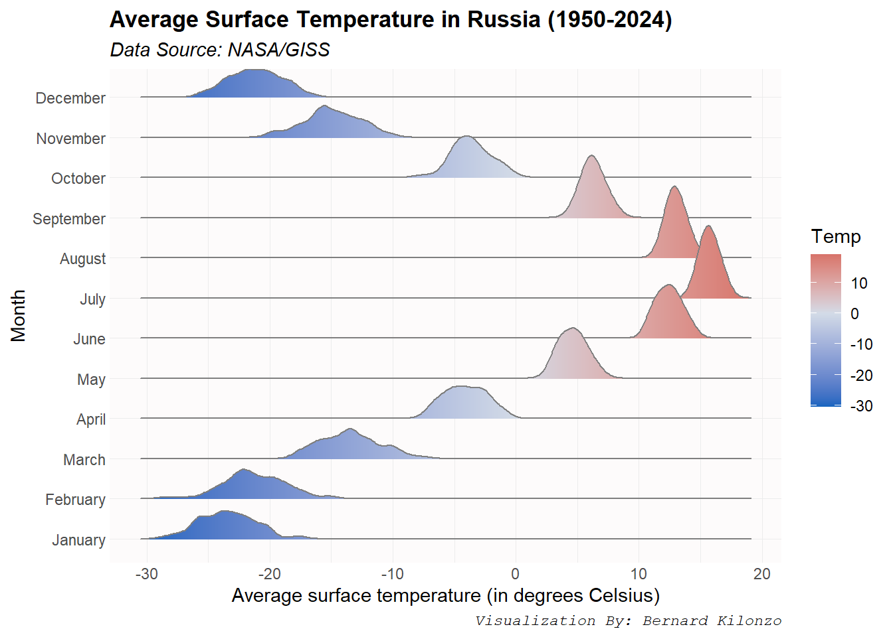

Show the code
#loading libraries
library(ggridges)
library(tidyverse)
#loading data
surface_temperature<-read_csv("https://raw.githubusercontent.com/bernardkilonzo-rigor/dataviz/main/data/global%20surface%20temperature.csv")
#pivoting dataset
surface_temperature<-surface_temperature%>%
pivot_longer(cols = -c(Entity,Code, Month),
names_to = "Year",
values_to = "Temp")
#rounding-off values & computing month names
surface_temperature<-surface_temperature%>%
mutate(tempr = round(Temp,3))%>%
mutate(mon = month.name[Month])
#ordering months
surface_temperature$mon<-factor(surface_temperature$mon, levels = month.name)
#creating ridgeline plot - for russia
surface_temperature%>%filter(Entity=="Russia")%>%
ggplot(aes(x = tempr, y = mon, fill = stat(x)))+
geom_density_ridges_gradient(color = "gray50",linewidth = 0.4)+
scale_fill_gradient2(low = "#1565c0", mid = "#D3DBE7", high = "#c62828", midpoint = 0)+
labs(title = "Average Surface Temperature in Russia (1950-2024)",
subtitle = "Data Source: NASA/GISS",
caption = "Visualization By: Bernard Kilonzo",
y ="Month", x = "Average surface temperature (in degrees Celsius)",
fill = "Temp")+
theme(panel.grid = element_line(color = "#ececec", linewidth = 0.1),
panel.background = element_rect(fill = "#fdfbfb"),
axis.ticks = element_blank(),
plot.title = element_text(family = "sans",face = "bold"),
plot.subtitle = element_text(family = "sans",face = "italic"),
plot.caption = element_text(family = "mono",face = "italic")
)